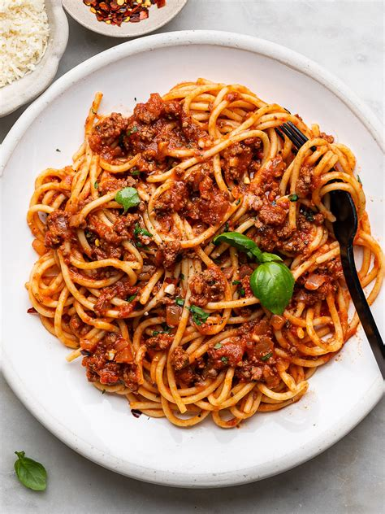

Spaghetti Bolognese

Beschrijving
Een heerlijke en tegelijk eenvoudige spaghetti bolognese. Eenvoudig klaar te
maken met een minimum aan ingrediënten.
Ingrediënten
- 1 courgette
- Enkele champignons
- 200 gr gehakt
- 1 blik gepelde tomaten of een kartonnetje passata
- oregano, peper, zout
- 250 gram spaghetti 5
- olijfolie
- geraspte kaas
Bereiding
- Snij de courgette in blokjes
- Was de champignons en snijd ze in schijfjes
- Stoof de courgette en champignons in olijfolie
- Bak het gehakt in een pan en kruid met oregano, peper en zout
- Voeg het gebakken gehakt toe aan de courgette en champignons
- Voeg de gepelde tomaten (of passata) toe en laat licht koken
- Kook de pasta la dente
- Serveer met de geraspte kaas
Home